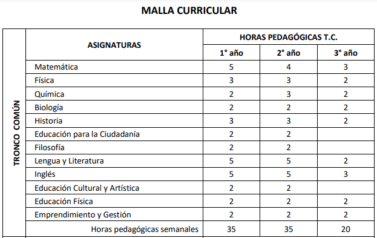
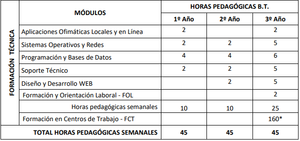

Bachillerato Tècnico Informàtica
Bachillerato Tècnico Agropecuaria
Bachillerato Tècnico Productivo
Educación es muy importante para nosotros y por eso desde los primeros años de tu hijo podrá entrar a nuestra institución que va ayudar a su aprendizaje
Inicial 1
Comprende infantes de hasta los 3 años de edad y ayuda a su desarrollo de motricidad y educación
.
Inicial 2
Este va desde los 3 años hasta los 5 años y esta etapa se dará acabo de desarrollar las relaciones como: el medio natural y el lógico-matemático
Matriculas para inicial 1y 2
Requisitos:
os Padres de familia y representantes legales de los niños y niñas que van a ingresar a la Unidad Educativa "Cayambe" para la EDUCACIÓN INICIAL 1 y 2 pueden acercarse a las instalaciones de institución para realizar las inscripciones llevando los siguientes documentos:
- Copia de cédula del niño o niña y de sus representantes legales.
- Copia de la planilla de luz y
- 3 fotos tamaño carnet.

Educación básica
Corresponde a 1er grado. Están los niños de 5 años de edad, en grado se da algunas materias que van ayudar a que se pueda empezar a su desarrollo de conocimientos generales y adoptar más las capacidades.
Octavo año
Preferentemente se da entre los 12a 13 años de edad
Matricula
Requisitos:
Asignación del cupo (Matrícula Automática)
-
- Imprimirla desde la página del ministerio (https://juntos.educacion.gob.ec/index.php/consulta-sierra/asignacion)
2 fotos tamaño carnet.
• Certificados de Matrículas de Segundo a Séptimo de Básica.
• Certificados de Promoción de Segundo a Séptimo de Básica.
• Copia a color de la cédula de identidad del estudiante.
• Copia individual a color de la cédula de identidad del padre y madre de familia.
• Copia de la cédula del Representante Legal (en caso de no ser el padre o madre del estudiante).
• Copia de la carta de un servicio básico (primordial de la luz).
Noveno año de educación
Preferentemente se ofrece a los estudiantes de 13ª 14 años edad
Matricula:
Asignación del cupo (Matrícula Automática)
-
- Imprimirla desde la página del ministerio (https://juntos.educacion.gob.ec/index.php/consulta-sierra/asignacion)
2 fotos tamaño carnet.
• Certificados de Matrículas de Segundo a Octavo de Básica.
• Certificados de Promoción de Segundo a Octavo de Básica.
• Copia a color de la cédula de identidad del estudiante.
• Copia individual a color de la cédula de identidad del padre y madre de familia.
• Copia de la cédula del Representante Legal (en caso de no ser el padre o madre del estudiante).
• Copia de la carta de un servicio básico (primordial de la luz).
Décimo año
Preferentemente se ofrece a los estudiantes de 14 a 15 años de edad
Matricula:
Asignación del cupo (Matrícula Automática)
-
- Imprimirla desde la página del ministerio (https://juntos.educacion.gob.ec/index.php/consulta-sierra/asignacion)
2 fotos tamaño carnet.
• Certificados de Matrículas de Segundo a Noveno de Básica.
• Certificados de Promoción de Segundo a Noveno de Básica.
• Copia a color de la cédula de identidad del estudiante.
• Copia individual a color de la cédula de identidad del padre y madre de familia.
• Copia de la cédula del Representante Legal (en caso de no ser el padre o madre del estudiante).
• Copia de la carta de un servicio básico (primordial de la luz).
Bachillerato técnico informática
Brinda una formación técnica, humanística y ética creando profesionales creativos y críticos para adecuarlos a las exigencias que existen hoy en día.
Comprende a adolescentes que aprenderán a desenvolverse en el área de informática. La Unidad Educativa “Cayambe” tiene profesores especializados en informática ayudan al desenvolvimiento de los estudiantes y a los 3 laboratorios que nos ayudan a poder comprender mejor los temas y realizar prácticas.

Bachillerato Tècnico Agropecuaria
Desarrolla competencias en las áreas de procesos, análisis y elaboración de productos agropecuarios.
Brinda conocimientos en los cultivos, compostajes, abonos y etc. también en la crianza y manejo de animales.
Todo esto se da gracias que la Unidad Educativa” Cayambe” tiene profesores especializados en agropecuaria y a los terrenos uno está en el colegio.
.png)
.png)
En el área que cubren las materias troncales, el bachillerato de Ciencias permite acceder a estudios de Biología, Química, Física y Matemáticas. También podrás cursar estudios más actuales, como Biotecnología, Ciencias Ambientales o Nutrición.
Bachillerato Técnico Productivo BTP
Tiene como propósito fortalecer las capacidades y competencias de los estudiantes en el mundo del trabajo articulando la educación media con la actividad empresarial sustentada en la modalidad.
Tiene 7 módulos de aprendizajes de la especialidad. Se realiza 1200 horas 600 horas teorías y 600 horas prácticas
Se da acabo los sábados y domingos
Educación básica superior
8vo-9n0-10mo
Bachillerato en ciencias
1ro-2do-3ro

Educación básica superior
8vo-9n0-10mo
5 meses cada año lectivo
Bachillerato en ciencias
1ro-2do-3ro
5 mese cada año lectivo
Horario de clases de lunes a viernes de 18:00pm a 22:00pm
Modalidad intensiva nocturna presencial